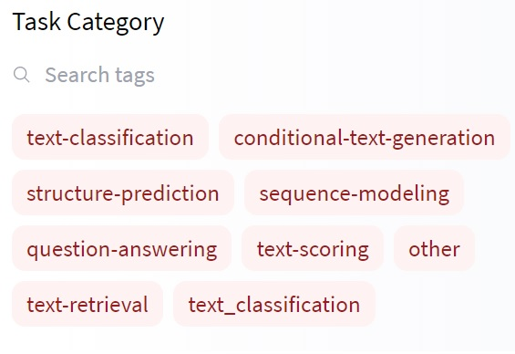
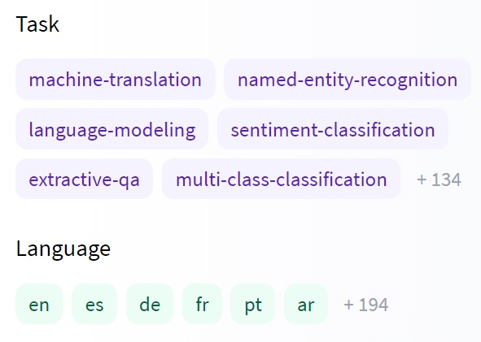
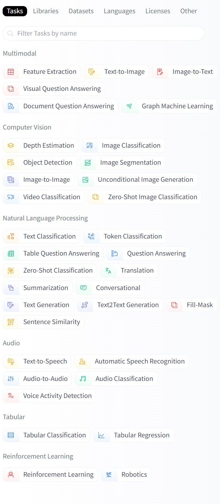
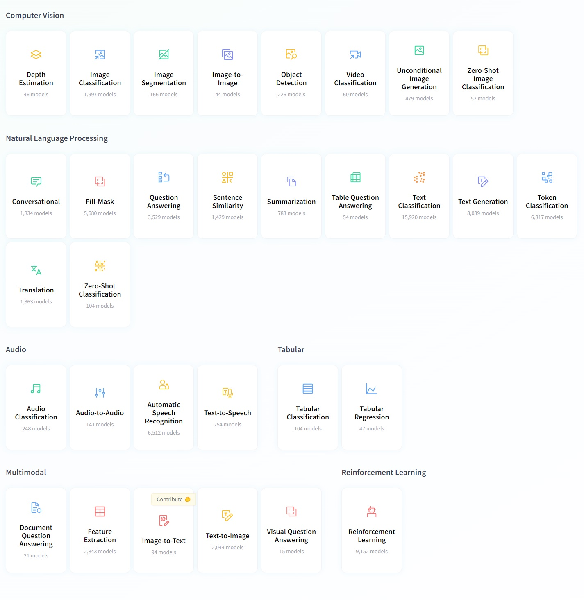
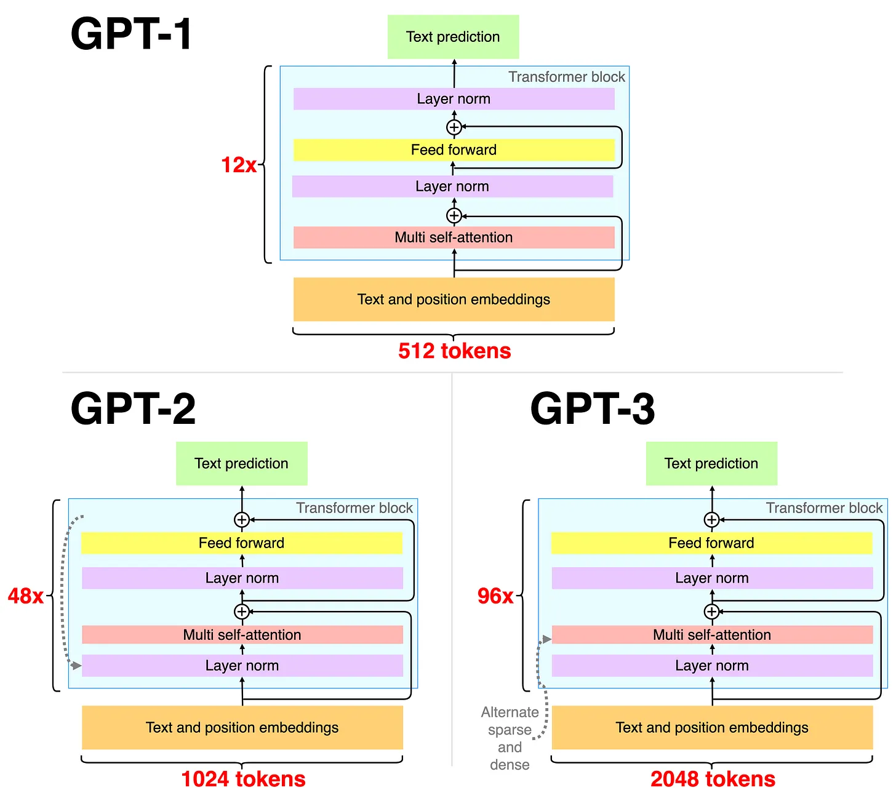
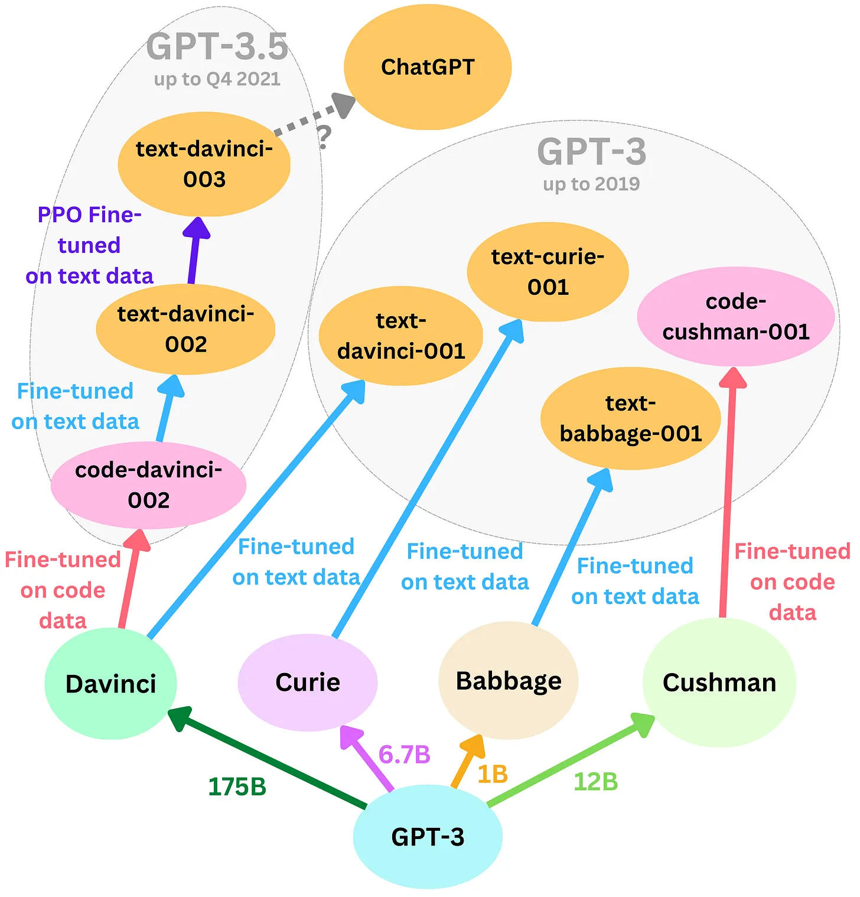

T4. Centralización de datasets y modelos: Huggingface, OpenAI
Contents
T4. Centralización de datasets y modelos: Huggingface, OpenAI#
Contenidos:
Introducción#
Huggingface.co una compañía centrada en el PLN la cual ha desarrollado las librerías Transformers, centralizado datasets y ha creado modelos de aprendizaje pre-entrenados disponibles a través de sus librerías de programación. Las librerías de Huggingface actualmente dan soporte a empresas muy importantes del mercado tecnológico. Ver https://huggingface.co/.
Repositorio de Datasets#
Proporciona conjuntos de datos para muchas tareas de PLN como clasificación de texto, respuesta a preguntas, modelado de lenguaje, etc.
Instalación de librería de manipulación de datasets
Para la instalación de la librería de manipulación de datasets se debe ejecutar la siguiente instrucción pip:
>>> pip install datasets
Para asegurarnos de que Transformers dataset se ha instalado correctamente es necesario ejecutar la siguiente instrucción:
>>> python -c "from datasets import load_dataset; print(load_dataset('squad', split='train')[0])"
Esta instrucción debe descargar la versión 1 del conjunto de datos de respuesta a preguntas de Stanford, cargar su división de entrenamiento e imprimir el primer ejemplo de entrenamiento de la siguiente manera:
{'id': '5733be284776f41900661182', 'title': 'University_of_Notre_Dame', 'context': 'Architecturally, the school has a Catholic character. Atop the Main Building\'s gold dome is a golden statue of the Virgin Mary. Immediately in front of the Main Building and facing it, is a copper statue of Christ with arms upraised with the legend "Venite Ad Me Omnes"...', 'question': 'To whom did the Virgin Mary allegedly appear in 1858 in Lourdes France?', 'answers': {'text': array(['Saint Bernadette Soubirous'], dtype=object), 'answer_start': array([515], dtype=int32)}}
Listar datasets disponibles en el repositorio#
Para listar los conjuntos de datos disponibles es necesario ejecutar la siguiente función datasets.list_datasets () que pertenece a la clase datasets.
>>> from datasets import list_datasets
>>> datasets_list = list_datasets()
>>> len(datasets_list)
656
>>> print(', '.join(dataset for dataset in datasets_list))
aeslc, ag_news, ai2_arc, allocine, anli, arcd, art, billsum, blended_skill_talk, blimp, blog_authorship_corpus, bookcorpus, boolq, break_data,
c4, cfq, civil_comments, cmrc2018, cnn_dailymail, coarse_discourse, com_qa, commonsense_qa, compguesswhat, coqa, cornell_movie_dialog, cos_e,
cosmos_qa, crime_and_punish, csv, definite_pronoun_resolution, discofuse, docred, drop, eli5, empathetic_dialogues, eraser_multi_rc, esnli,
event2Mind, fever, flores, fquad, gap, germeval_14, ghomasHudson/cqc, gigaword, glue, …
Otra alternativa es:
Ir a la web https://huggingface.co
Seleccionar el menú Datasets: https://huggingface.co/datasets
Filtrar por categoría, idioma, tarea y/o licencia
¿Cómo cargar datasets?#
Haciendo uso de la función load_dataset se nos permite recuperar cualquier dataset registrado en el repositorio. Por ejemplo, el dataset MRPC que ha sido proporcionado en el índice de referencia GLUE (https://gluebenchmark.com/leaderboard).
>>> from datasets import load_dataset
>>> dataset = load_dataset('glue', 'mrpc', split='train')
O podemos ver otro ejemplo como el de eHealth-KD
>>> from datasets import load_dataset
>>> dataset = load_dataset("ehealth_kd")
No obstante, la librería datasets permite además cargar conjuntos de datos propios que no formen parte del repositorio. Por ejemplo:
>>> from datasets import load_dataset
>>> dataset = load_dataset('csv', data_files='my_file.csv')
Para más detalles sobre las distintas funciones y parámetros permitidos para manipular datasets ver la siguiente documentación:
Categorías, tareas e idiomas de datasets#
Categorías: En este repositorio podemos encontrar un amplio catalogo de categorías por las cuales filtrar y y especificar el tipo de dateset que estamos buscando. Hemos de resaltar que estos datasets existen originalmente en diferentes formatos, nos obstante en una vez incluido en este repositorio, el formato es estandar. Por tal motivo, a través de las librías de manipulación (las mencionadas enteriormente) que ofrece Huggingface, podemos acceder a ellos y gestionarlos.
{kind=link}
Figura 1. Categorías filtro de datasets
Más de 134 tareas y más de 194 idiomas:
{kind=link}
Figura 2. Tareas e idiomas filtro datasets
Repositorio de Modelos pre-entrenados#
La biblioteca de Transformers permite el uso de modelos previamente entrenados para tareas de Comprensión del lenguaje natural (NLU), i.e. como analizar el sentimiento de un texto, y Generación del lenguaje natural (NLG), i.e. como completar un mensaje con texto nuevo o traducir a otro idioma. A groso modo listamos los modelos que nos podemos encontrar
Análisis de sentimiento: Conocer si un texto es positivo o negativo
Generación de texto (en inglés): proporcionar un mensaje para el cual el modelo generará un texto.
Reconocimiento de entidades nombradas (NER): Dado en una oración de entrada se etiqueta cada palabra con la entidad que esta representa (persona, lugar, organización, etc.)
Respuesta a preguntas: Teniendo en cuenta un modelo de un contexto determinado, dado un pregunta se obtiene una respuesta.
Relleno de texto con máscara: Dado un texto con palabras enmascaradas (p. Ej., Reemplazado por [MÁSCARA]), completar los espacios en blanco.
Resumen: Generación de un resumen a partir de texto extenso.
Traducción: Traducción de un texto a otro idioma.
Extracción de características: Obtener una representación tensorial del texto. Tomado de https://huggingface.co/transformers/quicktour.html
Listado de tareas tal y como las podemos encontrar en el repositorio: El listado de tareas, como categorías, en las que podemos filtar los distintos modelos preentrenados que ofrece el repositorio Huggingface, es igual de amplio que el de los datasets. Como podemos observar, a partir de 2022 tal y como se describe más adelante, en el siguiente imagen este repositorio no solo ofrece modelos prentrenados para el modelado del lenguaje, sino también para desarrollar tareas de distintas modalidades: multimodal, lenguaje, audio, visión(imagen), datos estructurados(tabulados), y otros.
{kind=link}
Figura 3. Tareas filtro modelos
Idiomas para los que se han entrenado los modelos: El listado de idiomas,como categorías, en las que podemos filtar los distintos modelos preentrenados que ofrece el repositorio Huggingface, es igual de amplio que el de los datasets.
Una explicación detallada sobre cada una de estas tareas y ejemplos de uso con Huggingface Transformer la podemos encontrar en el siguiente enlace:
Huggingface a partir de 2022 A mediados de 2022 esta plataforma federativa da un paso agigantado expandiendo datasets y modelos preentrenados de solo ofrecer recursos para la modalidad de Procesamiento del Lenguaje Natural, a ofrecer recursos Multimodales, Visión por Computadora, Procesamiento de Audio, Procesamiento de datos Tabulares y para Aprendisaje por reforzamiento.
En la mayoría de los casos se ofrece una ejemplo de uso y documentación. Poner en marcha cualquiera de estas tareas, reajustando o no los modelos prentrenados que se ofrecen en esta plataforma, se encuentra bien documentado y ejemplificado en ella: Ver Categorías https://huggingface.co/tasks
{kind=link}
Figura 4. Categorías de documentaciones agrupadas por tareas y modalidades
Ejemplo de Análisis de Sentimientos con Huggingface Transformer:
>>> from transformers import pipeline
>>> classifier = pipeline('sentiment-analysis')
>>> classifier('We are very happy to show you the 🤗 Transformers library.')
[{'label': 'POSITIVE', 'score': 0.9997795224189758}]
Si os fijáis hemos cargado un modelo pre-entrenado a través del pipeline sentiment-analysis para utilizarlo como clasificador. Este modelo se puede reentrenar a escenarios específicos si queremos realizando un ajuste sobre un nuevo corpus. Para más detalles ver la clase práctica bloque3_p3_SA-Transformers-Training-FineTuning
Si queremos que el pipeline sea multilingue, podemos indicar el modelo exacto que contemple un diccionario de este tipo y el pipeline lo ensamblará internamente. Mirad el siguiente ejemplo:
>>> from transformers import pipeline
>>> classifier = pipeline('sentiment-analysis', model='nlptown/bert-base-multilingual-uncased-sentiment' )
>>> classifier('Estoy muy triste')
[{'label': '1 star', 'score': 0.7241697907447815}]
Para otras tareas como Rellenado de Máscaras podemos ver como podemos simplemente indicar el tipo de tarea para que el pipeline seleccione el tipo de configuración más adecuada a esta y el modelo que queremos aplicarle. Con solo cambiar el modelo base podemos hacer esta tarea unilingue a multilingue o cambiar de idioma. Ver el ejemplo a continuación:
>>> from transformers import AutoModelWithLMHead, AutoTokenizer
>>> model = AutoModelWithLMHead.from_pretrained('mrm8488/RuPERTa-base')
>>> tokenizer = AutoTokenizer.from_pretrained("mrm8488/RuPERTa-base", do_lower_case=True)
>>> from transformers import pipeline
>>> pipeline_fill_mask = pipeline("fill-mask", model=model, tokenizer=tokenizer)
>>> pipeline_fill_mask("España es un país muy <mask> en la UE")
[{'score': 0.19951821863651276,
'sequence': 'España es un país muy importante en la UE',
'token': 1560,
'token_str': ' importante'},
{'score': 0.04137842729687691,
'sequence': 'España es un país muy grande en la UE',
'token': 2741,
'token_str': ' grande'},
{'score': 0.029216745868325233,
'sequence': 'España es un país muy pequeño en la UE',
'token': 2948,
'token_str': ' pequeño'},
{'score': 0.02563760057091713,
'sequence': 'España es un país muy popular en la UE',
'token': 5782,
'token_str': ' popular'},
{'score': 0.022264542058110237,
'sequence': 'España es un país muy antiguo en la UE',
'token': 5240,
'token_str': ' antiguo'}]
Listado de Pipelines#
En Huggingface podemos encontrar una serie de Pipelines ya preparados para enfrentar tareas concretas a los cuales les podemos suministrar distintos modelos y tokenizadores transformes. Ver ejemplos: https://huggingface.co/transformers/main_classes/pipelines.html
¿Cómo buscar y reutilizar modelos pre-entrenados en la plataforma?#
A continuación, se listan los pasos a seguir:
Dirigirse al repositorio https://huggingface.co/
Seleccionar el menú
modelsque nos llevará a https://huggingface.co/modelsFiltrar el listado de modelos según la tarea, idioma, librería (Pytorch o TensorFlow), dataset sobre el que fue entrenado, o licencia. Por ejemplo: tarea
Text Classification; idiomaes.Elegir un modelo de la lista. Por ejemplo:
bert-base-multilingual-uncased-sentimentObtendremos la documentación necesaria para utilizar el modelo.
Conociendo el nombre del modelo a utilizar entonces podemos hacer uso de este a través de la librería Transformer. En la propia documentación se aporta el código de ejemplo para hacer uso del modelo y en algunos casos una interfaz para probarlo:
from transformers import AutoTokenizer, AutoModelForSequenceClassification
tokenizer = AutoTokenizer.from_pretrained("nlptown/bert-base-multilingual-uncased-sentiment") # cargando el toquenizador basado en el modelo preentrenado
model = AutoModelForSequenceClassification.from_pretrained("nlptown/bert-base-multilingual-uncased-sentiment") # cargando del modelo preentrenado
Configuraciones de modelos trasnformers#
Los modelos pre-entrenados que se brindan en el repositorio se basan en alguna de las arquitecturas Transformers descrita en la documentación del repositorio (https://huggingface.co/docs). Si tomamos como referencia la arquitectura de modelo Transformer DistilBERT podemos conocer cómo gestionar los distintos parámetros, configuraciones de red neuronal, tokenizador y ejemplos documentados para cada tipo de tarea, tal y como podemos encontrar en el siguiente enlace (https://huggingface.co/course/chapter7/).
>>> # !pip install transformers
>>> from transformers import DistilBertTokenizer, DistilBertModel
>>> import torch
>>> tokenizer = DistilBertTokenizer.from_pretrained('distilbert-base-uncased') # cargando de toquenizador basado en el modelo preentrenado
>>> model = DistilBertModel.from_pretrained('distilbert-base-uncased') # cargando el modelo preentrenado
>>> inputs = tokenizer("Hello, my dog is cute", return_tensors="pt")
>>> outputs = model(**inputs)
>>> last_hidden_states = outputs.last_hidden_state
>>> print(last_hidden_states)
tensor([[[-1.8296e-01, -7.4054e-02, 5.0267e-02, ..., -1.1261e-01,
4.4493e-01, 4.0941e-01],
[ 7.0631e-04, 1.4825e-01, 3.4328e-01, ..., -8.6039e-02,
6.9475e-01, 4.3353e-02],
[-5.0721e-01, 5.3086e-01, 3.7163e-01, ..., -5.6287e-01,
1.3756e-01, 2.8475e-01],
...,
[-4.2251e-01, 5.7314e-02, 2.4338e-01, ..., -1.5223e-01,
2.4462e-01, 6.4155e-01],
[-4.9384e-01, -1.8895e-01, 1.2641e-01, ..., 6.3241e-02,
3.6913e-01, -5.8252e-02],
[ 8.3269e-01, 2.4948e-01, -4.5440e-01, ..., 1.1998e-01,
-3.9257e-01, -2.7785e-01]]], grad_fn=<NativeLayerNormBackward>)
Es importante conocer que las configuraciones de modelos Transformer ya cuentan con modelos base pre-entrenados. En el caso de DistilBERT podemos encontrar distilbert-base-uncased.
Tecnologías de generación#
GPT#
GPT significa “Generative Pretrained Transformer”. Es un modelo de lenguaje que utiliza técnicas de deep learning para generar texto de manera autónoma. GPT ha sido entrenado en una amplia cantidad de contenido textual. !Es orientado a liberías! Es decir, se puede incorporar el componente en tu propia aplicación.
GPT-1: Es la primera versión de GPT, entrenado con 117 millones de parámetros. Aunque es significativamente más limitada que las versiones posteriores, aún es capaz de generar texto aceptable en muchos contextos. La arquietectura de GPT-1 es principalmente un conjunto de 12 bloques de transformadores decodificadores colocados uno tras otro(ej. 12x ver la imagen). Los datos de texto se codifican mediante una codificación de pares de bytes adaptada a caracteres. La incrustación de posición es aprendida, en lugar de la típica sinusoidal estática. La longitud máxima para tokens consecutivos es 512. La capa superior es simplemente una capa softmax adaptada a la tarea de aprendizaje específica.
GPT-2: Es la segunda versión de GPT, con solo 1.5 mil millones de parámetros. Es capaz de generar texto coherente y a menudo convincente. GPT-2 tiene básicamente la misma arquitectura que GPT-1, pero el modelo más grande contiene 48 bloques(48x ver la imagen) de transformadores. La segunda capa de normalización se mueve a la primera posición en un bloque y el último bloque contiene una capa de normalización adicional. Los pesos se inicializan de forma ligeramente diferente y se aumenta el tamaño del vocabulario. El número de tokens consecutivos se incrementa a 1024.
GPT-3: Es la tercera versión de GPT y es uno de los modelos de lenguaje más grandes y avanzados jamás entrenados. Tiene más de 175 mil millones de parámetros, lo que le permite generar texto muy convincente en una amplia variedad de contextos. GPT-3 tiene la misma arquitectura que GPT-2, pero el número de bloques aumentó a 96 en el modelo más grande y el tamaño del contexto (número de tokens consecutivos) aumentó a 2048. Las capas de autoatención de varios cabezales se alternan entre los típicos densos los escasos y los dispersos.
GPT-1 se entrena de manera autosupervisada (aprende a predecir la siguiente palabra en datos de texto) y se ajusta de manera de aprendizaje supervisado. GPT-2 se entrena de forma totalmente autosupervisada, centrándose en la transferencia de zero-shot y GPT-3 se entrena previamente de manera autosupervisada explorando un poco más few-shots fine-tuning.
{kind=link}
Figura 4. Arquitecturas GPT. Fuente https://newsletter.theaiedge.io/p/the-chatgpt-models-family
Además de estas versiones, también existen variantes más pequeñas de GPT para diferentes usos, como GPT-3 Lite y GPT-2 Medium. Cada una de estas variantes tiene un tamaño y capacidad diferente, lo que las hace más adecuadas para diferentes aplicaciones y escenarios.
Entrenamiento del GPT#
GPT-1 está preentrenado en el conjunto de datos de BooksCorpus, que contiene ~7000 libros que suman ~5 GB de datos: https://huggingface.co/datasets/bookcorpus.
GPT-2 se entrena previamente con el conjunto de datos de WebText, que es un conjunto más diverso de datos de Internet que contiene ~8 millones de documentos para aproximadamente ~40 GB de datos: https://huggingface.co/datasets/openwebtext
GPT-3 utiliza una versión ampliada del conjunto de datos de WebText, dos corpus de libros basados en Internet que no se divulgan y la Wikipedia en inglés que constituyó ~600 GB de datos.
La implementación de GPT-2 se puede encontrar en los siguientes repositorios:
TensorFlow por OpenAI: https://github.com/openai/gpt-2/blob/master/src/model.py
PyTorch por Andrej Karpathy: https://github.com/karpathy/minGPT/blob/master/mingpt/model.py
A continuación se muestra un ejemplo de uso de GPT2 en un Pipeline:
from transformers import pipeline, set_seed
generator = pipeline('text-generation', model='gpt2')
set_seed(42)
generator("My name is", max_length=30, num_return_sequences=5)
GPT-3 API se encuentra disponible en el siguiente enlace: https://platform.openai.com/docs/introduction/overview
Ventajas#
Alto rendimiento en tareas de lenguaje natural: GPT está entrenado en una gran cantidad de texto en internet, lo que le permite desarrollar una comprensión profunda del lenguaje natural y su uso en diferentes contextos. Esto hace que mejore la capacidad de rendimiento y calidad en tareas como la traducción automática, la generación de texto y la respuesta a preguntas.
Facilidad de uso: GPT es un modelo pre-entrenado, lo que significa que no es necesario entrenarlo desde cero para cada tarea específica. Esto significa que es más fácil de usar para los desarrolladores y requiere menos recursos de hardware y tiempo de entrenamiento.
Adaptabilidad: GPT puede ser finetuneado o adaptado a diferentes tareas y contextos específicos. Esto permite que el modelo se ajuste a los requisitos específicos de cada proyecto y mejore su rendimiento.
Capacidad generativa: GPT es un modelo generativo, lo que significa que es capaz de generar texto de forma autónoma. Esto es útil en una variedad de aplicaciones, como la generación de contenido, la creación de diálogos virtuales y la respuesta a preguntas.
Desventajas#
Bias y desigualdades: Al estar entrenado en una gran cantidad de texto en internet, GPT puede incorporar los sesgos y desigualdades presentes en la fuente de datos.
Inseguridad: GPT es un modelo de aprendizaje automático, lo que significa que su rendimiento puede ser afectado por la calidad y la representatividad de la fuente de datos utilizada para su entrenamiento. Además, el modelo puede ser vulnerable a ataques y manipulaciones, como la generación de texto falsificado o la respuesta a preguntas inapropiadas.
Costos computacionales: GPT es un modelo grande y complejo que requiere una gran cantidad de recursos computacionales para su entrenamiento y uso. Esto puede resultar en costos elevados para el hardware y la energía, lo que puede ser un obstáculo para algunos usuarios.
Limitaciones en la comprensión del contexto: Aunque GPT ha sido entrenado en una gran cantidad de texto, todavía puede tener dificultades para comprender el contexto en el que se utiliza el lenguaje natural. Esto puede resultar en respuestas poco precisas o inapropiadas en ciertos contextos.
Copilot#
Es asistente de inteligencia artificial diseñado, por OpenAI, para ayudar enel completamiento de código mediante el uso de la conversación natural. Copilot utiliza modelos de lenguaje avanzados para comprender tus necesidades y brindarte la información y la ayuda que necesitas. Puedes interactuar con Copilot en una variedad de plataformas y dispositivos, incluyendo mensajería, aplicaciones de chat, aplicaciones de escritorio y más. !Es orientado a servicios en la nube! Es decir, se se accede a los servicios online a través de una API.
Copilot está diseñado para ayudarte a realizar una amplia gama de tareas y responder preguntas de forma eficiente y precisa. Algunos ejemplos de las tareas que puedes realizar con Copilot incluyen:
Consultar información sobre el clima, la hora actual y otras condiciones meteorológicas.
Obtener información sobre eventos actuales, noticias y tendencias.
Realizar búsquedas en línea y encontrar información sobre temas específicos.
Programar recordatorios y citas.
Obtener recomendaciones de restaurantes, películas y otras formas de entretenimiento.
Traducir palabras y frases a otros idiomas.
Obtener información sobre la bolsa de valores, la tasa de cambio y otras cotizaciones financieras.
Resolver problemas matemáticos y responder preguntas sobre conceptos científicos y tecnológicos.
Copilot está diseñado para ayudarte a realizar muchas tareas cotidianas y responder preguntas de una manera conveniente y rápida. Ejemplo de ello, lo podemos encontrar en la integración de pluggins en Visual Studio Code para la completación de códigos.
Ventajas#
Copilot utiliza una interfaz de conversación natural (Visual y API) para interactuar con los usuarios, lo que hace que sea fácil y agradable de usar.
Está entrenado en una amplia gama de información y puede ayudar a los usuarios a encontrar y proporcionar información sobre una amplia variedad de temas.
Puede ayudar a los usuarios a realizar tareas y obtener información de manera más rápida y eficiente, lo que les permite ser más productivos.
Está diseñado para proporcionar una experiencia de usuario amigable y personalizada, lo que puede mejorar la satisfacción del usuario y fidelización.
Puede integrarse con otros servicios en línea para proporcionar una experiencia de usuario más completa.
Desventajas#
Costo: Copilot es un producto de OpenAI(empresa privada) y puede ser costoso pagar el uso de servicios para algunos usuarios, especialmente para aquellos que requieren una gran cantidad de uso o integraciones.
Accesibilidad limitada: Solo está disponible como una API, por lo que solo puede ser utilizado por desarrolladores y no está disponible directamente para el público en general.
Capacidad limitada: Aunque Copilot está entrenado en una amplia gama de información, todavía hay límites en su capacidad para comprender y responder a todas las preguntas y tareas.
Confidencialidad y privacidad: Al usar Copilot, debes compartir tus datos y preocuparte por la privacidad y seguridad de ellos.
Requiere habilidades técnicas: Para integrar esta tecnología en tus aplicaciones y servicios, debes tener habilidades técnicas y conocimientos en programación.
Alternativas a Copilot#
Dialogflow: Una plataforma de Google que permite a los desarrolladores crear chatbots y aplicaciones de conversación.
**IBM Watson Assistant: Una plataforma de inteligencia artificial de IBM que permite a los desarrolladores crear chatbots y aplicaciones de conversación.
Microsoft Bot Framework: Un marco de trabajo de Microsoft que permite a los desarrolladores crear chatbots y aplicaciones de conversación para varias plataformas, incluidas las aplicaciones de mensajería, los sitios web y las aplicaciones de escritorio.
Amazon Lex: Un servicio de Amazon Web Services que permite a los desarrolladores crear chatbots y aplicaciones de conversación.
Rasa: Un marco de software de código abierto que permite a los desarrolladores crear chatbots y aplicaciones de conversación.
ChatGPT#
Es un modelo de lenguaje entrenado utilizando una gran cantidad de texto en internet. Se trata de una tecnología de procesamiento del lenguaje natural que permite a los usuarios interactuar con el modelo mediante el uso de conversaciones naturales. !Es orientado a servicios en la nube! Es decir, se se accede a los servicios online a través de una API.
Algunas de las funcionalidades más destacadas incluyen:
Responder preguntas: ChatGPT puede responder preguntas sobre una amplia gama de temas, incluyendo historia, geografía, ciencias, tecnología, programación y mucho más.
Completar oraciones o fragmentos de texto: ChatGPT puede utilizar el contexto y la información previa para completar oraciones o fragmentos de texto de manera eficiente.
Generar texto: ChatGPT puede generar texto en una variedad de formatos, como descripciones de productos, reseñas de películas y mucho más.
Traducción de idiomas: ChatGPT puede traducir palabras y frases a otros idiomas, lo que lo hace ideal para aquellos que desean comunicarse en un idioma distinto al suyo.
Resumen de texto: ChatGPT puede resumir grandes cantidades de texto en una forma concisa y fácil de entender.
Análisis de sentimientos: ChatGPT puede analizar el contenido de un texto para determinar el sentimiento que se expresa en él, como por ejemplo si es positivo, negativo o neutral.
En la web oficial de OpenAI podemos ver un amplio listado de ejemplos de aplicaciones de esta tecnología:
Q&A
Corrección gramtical
Resumir un texto
Traducir un texto complejo en un simple concepto.
Llamadas a APIs para usar técnicas de PLN
Generar comandos de programación a partir de instrucciones en lenguaje natural
Traducción automática
Generar codificación de programación: para llamar APIs, sentencias SQL, estructuras de programación, etc., desde instrucciones en lenguaje natural
Crear tabulaciones a àrtir de texto
Separar contenido no estructurado
Tareas de clasificación.
Extracción de categorías implícitas en textos
Generar descripciones y explicaciones a partir de códigos Python
Convertir el título de una película en un emoji
Hallar la complejidad computacional de una función
Traducir de un lenguaje de programación a otro
Detección de sentimientos para un fragmento de texto.
Explicar una pieza complicada de código.
Extraer palabras clave de un bloque de texto.
Convertir la descripción de un producto en un texto publicitario.
Generador de nombres de productos
Solucionar de errores de Python
Encontrar y corregir errores en el código fuente.
Crear de hojas de cálculo
Responder preguntas de JavaScript
Responder preguntas sobre modelos de lenguaje
Crear una lista de elementos para un tema determinado.
Extracción de información
Crear microhistorias
Convertir texto en de tercera persona
Generar esquemas para un tema.
Conversación abierta con un asistente de IA.
A continuación se muestra la evaluación de modelos hasta lo que hoy conocemos como ChatGPT:
{kind=link}
Figura 5. Evolución de GPT hasta llegar a ChatGPT. Fuente https://newsletter.theaiedge.io/p/the-chatgpt-models-family
Ejemplo de uso de la API ChatGPT:#
import openai
# Inicializar la API de OpenAI
openai.api_key = "tu_api_key_aqui"
# Hacer una pregunta a ChatGPT
response = openai.Completion.create(
engine="text-davinci-002",
prompt="Qué es el sol?",
max_tokens=1024,
n=1,
stop=None,
temperature=0.5,
)
# Imprimir la respuesta
print(response["choices"][0]["text"])
>>> "El sol es una estrella."
Nótese que para poder utilizar esta librería se ha de emplear un servicio en la nube del cual se ha de requerir una clave de acceso. Las instruciones para conseguirlas las podéis encontrar en el siguiente enlace: https://platform.openai.com/account/api-keys
Ventajas#
Gran capacidad de comprensión del lenguaje natural: ChatGPT ha sido entrenado en una amplia variedad de textos y ha desarrollado una comprensión profunda del lenguaje humano, lo que le permite responder de manera fluida y natural a las preguntas y comentarios de los usuarios.
Personalización: Puede ser personalizado para diferentes aplicaciones y usos, lo que lo hace ideal para una amplia variedad de industrias.
Alta disponibilidad: Está disponible en la nube y puede ser accedido desde cualquier lugar con una conexión a Internet, lo que lo hace muy accesible para los usuarios.
Rapidez y eficiencia: Es capaz de procesar grandes cantidades de información en un tiempo muy corto, lo que lo hace ideal para aplicaciones en tiempo real.
Mejora continua: Está en constante desarrollo y mejora por parte de OpenAI, lo que significa que sus capacidades y funciones continúan mejorando con el tiempo.
Desventajas#
Limitaciones en la comprensión del contexto: Aunque ChatGPT ha sido entrenado en una amplia variedad de textos, todavía puede tener dificultades para comprender el contexto completo de una conversación, especialmente en situaciones más complejas.
Responsabilidad por la precisión de la información: Puede proporcionar información que no sea precisa o que sea engañosa. Es responsabilidad del usuario verificar la información proporcionada por ChatGPT antes de tomar decisiones o acciones importantes.
Requisitos de infraestructura: Para utilizar ChatGPT, es necesario tener acceso a la infraestructura y los recursos necesarios para conectarse y comunicarse con el modelo. Esto puede ser un obstáculo para algunos usuarios que no cuenten con la infraestructura adecuada. Acceso a internet obligatorio!!!
Costo: Su uso puede requerir una inversión significativa en términos de costos de licenciamiento y recursos de infraestructura.
Alternativas a ChatGPT#
Algunas alternativas son:
PEER de Meta AI: un lenguaje entrenado para imitar el proceso de escritura. Está entrenado en los datos del historial de edición de Wikipedia. Se especializa en predecir ediciones y explicar las razones de esas ediciones. Es capaz de citar y citar documentos de referencia para respaldar las afirmaciones que genera. Es un transformador de 11 billones de parámetros con la arquitectura típica de codificador-decodificador, y está superando a GPT-3 en la tarea en la que se especializa.
LaMDA de Google AI: un modelo de lenguaje entrenado para aplicaciones de diálogo. Está pre-entrenado en de ~3 billones de documentos y ~1 billones de diálogos y ajustado en datos generados por humanos para mejorar la calidad, la seguridad y la veracidad del texto generado. También está ajustado para aprender a llamar a un sistema externo de recuperación de información, como la Búsqueda de Google, una calculadora y un traductor, lo que lo convierte en un candidato mucho más fuerte para reemplazar la Búsqueda de Google que ChatGPT. Es un decodificador de 135 billones parámetros solo el transformer.
PaLM de Google AI - El más grande de todos: ¡540 billlones de parámetros! Con capacidades innovadoras en aritmética y razonamiento de sentido común. Está entrenado en 780 mil millones de tokens provenientes de conversaciones en redes sociales multilingües, páginas web multilingües filtradas, libros, repositorios de GitHub, Wikipedia multilingüe y noticias.
Bibliografía#
[2] https://openai.com/blog/chatgpt/
[3] Zhang, Y., Sun, S., Galley, M., Chen, Y. C., Brockett, C., Gao, X., … & Dolan, B. (2019). Dialogpt: Large-scale generative pre-training for conversational response generation. arXiv preprint arXiv:1911.00536.
[4] https://newsletter.theaiedge.io/p/the-chatgpt-models-family